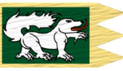
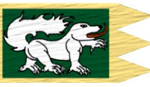

|

|
Das schwarze Brett
|
|
| Übersicht,
Anschläge und Stammtisch (RPG) |
|
Andragons letzter Kampf
|
| Irian von Tacheless (RIP) |
*Es ist ein Tag im Frühling, wie jeder andere. Die Blumen beginnen zu blühen, die Vögel kehren aus ihren Winterquartieren zurück und erfüllen die Landschaft mit Leben, als Irian von Tacheless sich um die Geschäfte in seiner Stadt kümmert, wie jeden Tag.
Gegen Nachmittag kommt ein Bote in die Stadt. Er ist auf der Suche nach dem Bürgermeister und wird dann auch vorgelassen.
Er übergibt Irian von Tacheless einen Brief mit den Worten: „Diesen soll ich Ihnen vom Verkünder des Glauben an Urvan übergeben.“
Schnell öffnet er den Brief und liest folgende Zeilen:*
Mein lieber Irian!
Lange sind wir nun befreundet. Viele Schlachten haben wir Seite an Seite gekämpft! Für Ruhm, Ehre und Gerechtigkeit. Wir haben gekämpft für all das, dass einer in sich verkörpert – Urvan!
Mit Stolz blicke ich zurück auf die Schlachten und Tränen rührt es mir in die Augen, wenn mir die in den Sinn kommen, die nicht mehr heimkehrten. Viele tapfere Recken, mit Herzen stärker als die Gier so vieler, die noch heute umherziehen und Schande über jegliche Form der Zivilisation bringen, sind gefallen – tapfer und mutig.
Und heute sitze ich da, in meinem warmen Kaminzimmer. Vor mir auf dem Tisch, der das Wappen der Drachen trägt, liegt mein Kardinalsring, und die Kette, die ich so lange schon tragen darf, mit dem Zeichen Urvans, von der es nur eine gibt und die von Verkünder zu Verkünder weitergegeben wird.
Diese Zeilen, die du gerade liest, sind Zeilen des Abschiedes. Urvan stellt mich vor eine letzte Prüfung und ich weiß nicht, ob wir uns noch einmal sprechen werden. Ich höre seine Stimme deutlicher denn je. Alle meine Gedanken kreisen um diesen einen ausständigen Kampf und die harte Gewissheit plagt mich, dass es mein letzter sein wird. Und ich habe Angst. Bringe ich selbst Schande über mich und über Urvan? Es ist schwer, sich furchtlos in einen Kampf zu stürzen, dessen Ausgang man längst kennt – einem Kampf ohne Wiederkehr. Aber wenn das meine Prüfung ist, wenn das der Weg ist, den ich gehen muss, dann werde ich ihn gehen. Vielleicht hilft mein Ableben dem einen oder anderen zurück auf den Pfad der Tugend, als Zeichen, als Symbol – vielleicht ist das aber auch nur ein Wunsch, der mir die Furcht vom Bevorliegendem nehmen soll.
Wie dem auch sei, ich sehe den Weg, den unser Herr für mich auserchoren hat deutlich vor mir und bin bereit ihn zu gehen – wohin er auch führen mag. Und wenn ich falle, dann mit dem Drachenschwert in der Hand, dem schwarzen Drachen auf der Brust und Urvan in meinem Herzen.
Ich bitte dich als Freund, trage meine Gedanken weiter. Lehre die Welt, dass es nicht ein Mann aus Fleisch und Blut ist, dem sie dienen soll, sondern ein Gedanke – eine stille Hoffnung, die nie vergeht und ewig währt. Das ist Urvan. Leugnen ist lügen. Denn solange es nur einen Mann oder eine Frau gibt, die Hoffnung im Herzen trägt, solange gibt es auch Urvan, seine Brüder und Schwestern. Führe den Konvent an meiner Stelle, bis ein Nachfolger gefunden wird. Richte ihnen meinen Dank aus, für all die Unterstützung, für all Hoffnung, die sie mir schenkten – ein jedes neue Mitglied, voller Ehre und Stolz, und auch denen, die mit mir von Anfang an dort waren und es noch heute sind. Aber auch denen, die kamen und gingen, aber nie verleugneten was tief in ihren Herzen verankert ist.
Nun bin ich bereit, den Weg zu gehen, der für mich geebnet wurde.
Lebe wohl, guter Freund und Bruder,
Lebe wohl Scherbenwelt!
gez.
Andragon Elrohir
- Kardinal im Dienste des einzig wahren Glaubens an Urvan
- Verkünder des Glaubens an Urvan
- Stimme der Drachen
- Vorsteher von Bor Col Casir
*Fassungslos setzt er sich auf einen Stuhl. Tausende Gedanken gehen ihm durch den Kopf. Was meint er mit der letzten Prüfung? Warum spricht er von Worten des Abschiedes?
Irian überlegt eine Weile sehr betrübt, bis ihm die letzten Gespräche einfallen, die er mit Andragon geführt hat. Immer wieder hat er von einem Hinweis auf einen Anhänger Lismafagans gesprochen. Er überlegte, ob er ihn aufsuchen solle, doch Irian versuchte ihn immer davon zu überzeugen, dass er nicht alleine gehen solle.
Er nannte ihm den Ort an dem der Anhänger Lismafagans sich aufhalten soll.
Irian packte sofort seine Sachen, rief seine Begleiter und ritt aus der Stadt. Er suchte sich die schnellsten Routen, um schnellstmöglich in die Stadt Bor Col Casir zu gelangen. Nicht weit davon entfernt sollte der Unterschlupf sein.
Kaum war Irian aus Bor Col Casir raus, schon sah er in den nahen Bergen Rauch aufsteigen. Er beschleunigte seine Schritte erneut und kam an dem Ort an, der ihm immer wieder von Andragon beschrieben wurde. Mühsam war der Weg in die Höhle. Alles lag in Trümmern.
Dann auf einmal erkannte Irian einen leblosen Körper auf dem Boden liegen. Er eilte zu ihm und es war Andragon.
Irian sprach ihn an: „Andragon...“
Mühsam drehte er seinen Kopf zu Irian und sah ihn wortlos an. Er deutete ein Nicken an und sank in den Schlaf der Ewigkeit. Sein Gesichtsausdruck erschien dabei glücklich und zufrieden.
Irian schaut den leblosen Körper Andragons an und wischte sich eine Träne aus dem Gesicht. Das Drachenschwert in der Hand und die Urvankette, das Zeichen des Verkünders, glänzt um seinen Hals.
Irian nimmt den Körper Andragons voller Schmerz und trägt ihn auf seinen Händen bis in die Stadt Bor Col Casir und lässt ihn dort aufbahren.*
Exitus Andragon Elrohir ist verstorben
Urvan hat dich zu sich genommen mein Freund. Schon viel zu früh, wie ich meine. Ich bin kein Mann der großen und langen Worte.
Mir bleibt nur zu sagen, dass ich dich vermissen werde.
Als Bruder im Glauben, als Verkünder des Glaubens an Urvan und vor allem als Freund.
Niemand hat je sein Amt so lange und wunderbar erfüllt, wie du es getan hast.
Schwer wird es für deinen Nachfolger, sehr schwer... .
Auf bald mein Freund. Wir werden uns wiedersehen.
In tiefster Trauer gezeichnet[/]
Baron Irian von Tacheless,
Vorsteher von Burg Sturmwind,
Hohepriester im Dienste des einzig wahren Glaubens an Urvan,
Ehemann der reizenden Sigarni,
Anführer der Legion Urvans,
Grossritter der Schwingen
Zur 20. Stunde am 20.Saatmond im Jahre 421 |
11.07.05 21:01
 |
|
| Irian von Tacheless (RIP) |
Andragon Elrohir fällt im Kampf für Urvan und wird an dessen Seite gerufen
Baron Irian von Tacheless,
Vorsteher von Burg Sturmwind,
Hohepriester im Dienste des einzig wahren Glaubens an Urvan,
Ehemann der reizenden Sigarni,
Anführer der Legion Urvans,
Grossritter der Schwingen
Zur 20. Stunde am 20.Saatmond im Jahre 421 |
11.07.05 21:03
|
|
| Emily Elrohir (RIP) |
Haltet die Welt an!
Es fehtl ein Stück.
Lady Emily Elrohir,
Vorsteherin von Bor Col Casir,
Ehefrau des ehrenwerten Andragon Elrohir
Zur 21. Stunde am 20.Saatmond im Jahre 421 |
11.07.05 21:05
|
|
| Harlan Hastelloy (RIP) |
Ein grosser Verlust für die Urvaner, ja für alle auf der Scherbe!
Sir Harlan Hastelloy,
Vorsteher von Korodon,
Kardinal im Dienste des einzig wahren Glaubens an Urvan
Zur 21. Stunde am 20.Saatmond im Jahre 421 |
11.07.05 21:09
|
|
Amazeroth
|
Ein verblendeter! Ein Diener der schwachen Götzen, mehr war er nicht. Ein Dummkopf, wie viele andere.
Mögen die wahren Herren ihn in Ihren Legionen kämpfen lassen. Seine Seele ruht bei den Herren, sein Körper wird nun weiterhin auf dieser Scherbe wandeln und das fortführen, wozu er zu lebzeiten zu schwach war!
Muradjanian sei gepriesen!
Amazeroth |
11.07.05 21:13
|
|
| Itto Ogami (RIP) |
*zündet eine Kerze an und bettet für seine Seele*
Lebt wohl, möge Urvan euch zu sich rufen.
Drake,
Kardinal im Dienste des einzig wahren Glaubens an Urvan
Zur 21. Stunde am 20.Saatmond im Jahre 421 |
11.07.05 21:15
|
|
| Arithon s`Ffalenn (RIP) |
Die Welt trauert um einen weiteren Helden...
Sir Arithon s`Ffalenn,
Atheistischer Freiheitskämpfer
Zur 21. Stunde am 20.Saatmond im Jahre 421 |
11.07.05 21:17
|
|
| Durnik Dykstrai (RIP) |
*kniet nieder als er die Kunde vom Tod seines Oberhauptes hört und schickt ein Stoßgebet zu Urvan* Lass es Ihm an nichts fehlen...
Durnik Dykstrai,
Priester im Dienste des einzig wahren Glaubens an Urvan
Zur 22. Stunde am 20.Saatmond im Jahre 421 |
11.07.05 21:23
|
|
| Pendrahil Amlug (RIP) |
Pendrahil sitzt an seinem Schreibtisch in seinem Landgut und öffnet den Brief, den ein Bote von seinem Lehnsmann und guten Freund, Andragon Elrohir gebracht hat.
Langsam liest er die Zeilen und mit jedem Wort, dass er mehr liest, zerfurcht sich seine Stirn immer tiefer. Traurigkeit erfasst sein Herz und er sinniert über das, was dort geschrieben steht und das, was sie erlebt haben.
„Andragon, seid Beginn der Tage in den Lagern der Orks, verband uns eine tiefe Freundschaft. Schon immer war Deine Hauptcharaktereigenschaft Stolz und dies konnte jeder sehen und hören, der mit Dir sprach. Ich erinnere mich an die Flucht aus Lager West und wie wir dann mühsam unsere neue Heimat erreichten, auf der Fregatte Caedmon Bresc sin Tanesars.
Kaum gelandet, errichteten wir unsere Landgüter direkt nebeneinander, wie wir es uns geschworen hatten in der harten Zeit der Gefangenschaft. Wir beide, Freunde fürs Leben, Lehnsmann und Lehnsherr schworen uns, stets füreinander da zu sein. Doch heute, in dieser Stunde, da, wo Dein letzter Kampf tobt, dort stehe ich nicht an Deiner Seite und diesen Tag werde ich verfluchen. Die Götter ermöglichten es mir nicht, mit Dir gemeinsam zu stehen, denn diese letzte Prüfung, war nur für Dich alleine bestimmt.
Ich erinnere mich noch, wie wir gemeinsam, den ersten Ork erlegten.“ schmunzelt dabei Wir brauchten beinahe unsere ganze Kraft und doch, war dies für mich, viel bedeutsamer, als jeglicher Ork, der danach fiel.
Du wurdest die Stimme der Drachen. Stolz erfüllte mich, Deinen Lehnsherrn, als Elasken Cirolur, der Führer der Nation, Dich fragte, ob Du nicht dieses verantwortungsvolle Amt übernehmen möchtest. Ich sah die Glut in Deinen Augen und wusste, für Dich gab es nur eine Antwort. Schwere Tage hatten wir zu überstehen. Hort der Freiheit wurde täglich angegriffen und Deine Aufgabe, die Öffentlichkeit über die Fakten zu unterrichten, erfülltest Du voller Leidenschaft und Hingabe.
Der Frieden hielt Einzug und Du ebenso, denn Du kehrtest in die Hallen des Herrn der Gerechtigkeit ein. Urvan empfing Dich, als Diener und unterwies Dich in seinen Künsten und Rechtsprechungen. Auch diese Aufgabe, erfülltest Du, mit der Gewissenhaftigkeit, die Dich auszeichnete. Ein starker Charakter, für einen starken Glauben.
Dann kam die Zeit, dass Du auch weitere weltliche Aufgaben übernahmst. Hort der Freiheit brauchte einen neuen Bürgermeister und wieder einmal fragte mich Elasken, wen ich für geeignet hielt. Ich kannte nur einen Namen, Deinen. Niemand anderes konnte die Stadt zu dem Glanz führen, den sie bis heute hat und Bor col Casir, wird bis in alle Ewigkeit, den Namen Andragon Elrohir nicht vergessen, dafür wird nicht zuletzt, Deine Frau sorgen.
Nachdem die Einwohner der Stadt zufrieden gestellt wurden, bekamst Du Deine größte Herausforderung und zugleich, Deine Erfüllung auf dieser Scherbe.
Urvan erwählte Dich zu seinem Verkünder. Seine heiligen Worte, sollten durch Dich, allen Wesen auf der Scherbe, verkündet werden. Du wurdest der dienstälteste Verkünder und auch hier hatte ich wieder allen Grund, auf Dich Stolz zu sein.
Die Zeit ging ins Land und einige Freunde verließen uns, darunter auch Elasken Cirolur. Die Zeit meiner Nationsführerschaft brach an und Ramius und Du, Ihr habt mich mit Eurer Weisheit und Eurer Stärke stets hervorragend beraten.
Gestatte mir zum Schluß dieses kleinen Rückblickes auf Dein Leben noch ein paar persönliche Worte mein Freund.
Andragon, niemandem habe ich je mehr vertraut, niemandes Meinung, zählte für mich je mehr und wird für mich jemals mehr zählen. Du warst mehr als ein Lehnsmann. Du warst und bist ein wunderbarer Freund. Dein Verlust, ist nicht mit Worten zu beschreiben und ich kann Dir nicht sagen, wie sehr ich Dich vermissen werde.“
Pendrahil ruft seinen Stadtkämmerer herein
„Verkünde es allen Hütern des schwarzen Drachen und allen Einwohnern der Scherbe.
Andragon Elrohir, die Stimme der Drachen, ist für immer verstummt.
Ich setze die Nationstrauer auf eine Woche fest.“
Nachdem sich der Kämmerer wieder entfernt hat, rinnen Pendrahil die Tränen über die Wange.
„Ruhe in Frieden, Sohn des Drachen“
Markgraf Pendrahil Amlug,
Vorsteher von Bor Col Cros,
Anführer der glorreichen Nation "Hüter des schwarzen Drachen"
Zur 23. Stunde am 20.Saatmond im Jahre 421 |
11.07.05 21:37
|
|
| Kimsa Tirjolfsson (RIP) |
Ein freudentag ... Andragon Elrohir darf an die Seite Urvans.
Auch wenn er uns in dieser Welt fehlen wird, so freue ich mich für Ihn.
Sir Kimsa Tirjolfsson,
Kardinal im Dienste des einzig wahren Glaubens an Urvan,
Anführer der glorreichen Nation "Libera",
Verlobter der reizenden Shanna Khan
Zur 23. Stunde am 20.Saatmond im Jahre 421 |
11.07.05 21:38
|
|
| Anastasius (RIP) |
Ein grosser Verlust fuer uns Urvaner.
Ein ebenso grosser Verlust fuer mich persoenlich.
Mir war es leider diesmal nicht vergoennt neben ihn zu streiten und die last auf mich zu nehmen...
Hail dir, oh grosser Verkünder.
Hail dir oh erster Recke Urvans.
Hail deinem Nachfolgern die an deinen Taten gemessen werden.
Mögest du direkt neben Urvan in Zukunft streiten.
Urvan mit Dir.
Dein ergebener "kleiner" Legionaer
Anastasius,
Kardinal im Dienste des einzig wahren Glaubens an Urvan,
Legionär Urvans
Zur 24. Stunde am 20.Saatmond im Jahre 421 |
11.07.05 21:54
|
|
Felaria Mendalon
.GIF) |
es ging von uns ein grosser verkünder urvans , und ein freund den ich vermisse , wiso hat man stehts das gefühl das die guten und aufrichtigen uns verlassen ?
das liegt daran das sie eine lücke hinterlassen die man sieht , karakterloses gewürm gibt es so viel das der verlust von tausenden nicht auffällt denn sie sind wie blätter im wind .
urvan mit euch freund andragon ..
Markgräfin Felaria Mendalon,
Vorsteherin von Winternacht
Zur 1. Stunde am 21.Saatmond im Jahre 421 |
11.07.05 22:04
|
|
Borbarad
|
Keine Angst, sie verlassen euch nicht. Sie deuten nur die Zeichen und stellen sich auf die richtige Seite bevor sie selbst unter die Räder kommen.
Wer kann schon der Verlockung widerstehen als Fürst ewig herrschen zu können?
Borbarad |
11.07.05 22:14
|
|
| Emily Elrohir (RIP) |
Mein Mann kann es.
Lady Emily Elrohir,
Vorsteherin von Bor Col Casir,
Witwe des ehrenwerten Andragon Elrohir
Zur 2. Stunde am 21.Saatmond im Jahre 421 |
11.07.05 22:18
|
|
| Hellron (RIP) |
So soll er in Frieden ruhen, neben
seinem Herren Urvan der ihm sicher
einen Platz an seiner Seite gewährt!
*kniet nieder und steckt eine Kerze an*
Sir Hellron,
Vorsteher von Donum Draconis,
Hohepriester im Dienste des einzig wahren Glaubens an Pheron,
Legionär Pherons
Zur 2. Stunde am 21.Saatmond im Jahre 421 |
11.07.05 22:23
|
|
| Elraldur (RIP) |
*entzündet in einem Urvan-Tempel eine Kerze und lässt sich nieder zum Gebet*
Ein großartiger Verkünder und ein Held ist von uns gegangen. Ich bin mir sicher, er wird einen Platz in Urvans Reich einnehmen.
Elraldur,
Kardinal im Dienste des einzig wahren Glaubens an Urvan,
Legionär Urvans
Zur 2. Stunde am 21.Saatmond im Jahre 421 |
11.07.05 22:26
|
|
| Judith Tatekohomni (RIP) |
Leise fällt ein Blatt vom Baum,
viel zu früh,
es wird immer wieder neue Blätter geben.
Doch keines wird so sein wie Du!
Andragon, mein Freund.
Du wirst immer einen Platz in meinem Herzen haben.
Ruhe in Frieden!
Caranethiriel von Hexenhain,
Dekanin der Universität zu Bor col Cros
Zur 3. Stunde am 21.Saatmond im Jahre 421 |
11.07.05 22:35
|
|
| Ramius (RIP) |
*Es ist Abend in Bor Col Nan. Ramius sitzt an seinem unordentlichen Schreibtisch.
Links und rechts von ihm türmen sich die Pergamente.
In einem kleinen Tal zwischen all den Dokumenten balanciert eine halbvolle Karaffe Rotwein.
Das Fenster hinter dem Magier ist weit geöffnet, und lässt die alten Spinnenweben unter der Decke, Vorhängen gleich, wehen.
Es klopft.*
"Was?"
*Gilthrandir, Ramius erster Lehrling, betritt den Raum einen Schritt, verneigt sich tief, schließt die Tür hinter sich, und schreitet dann leise auf den Schreibtisch zu.*
"Eine Depesche von Andragon Elrohir, mein Lord Herrscher."
"SIR Andragon Elrohir, wenn ich bitten darf!"
*schnell greift sich Ramius die Depesche, lässt kurz bewundernd die Finger über das Siegel gleiten. Ehrfürchtig bricht Ramius das Siegelwachs, und entnimmt vorsichtig den Brief.
Während seine rechte Hand, nach dem Rotweinglas greift, beginnt er zu lesen*
==========================
Ramius, Hüter des Schatzes der Hüter, großer Meravnan!
Zusammen sind wir in dieses Land gereist und zusammen haben wir das aufgebaut, was der Drachenhüter Stolz nun ist.
Hart und steinig war der Weg, doch viel haben wir zusammen erreicht. Ich blicke auf ein erfülltes Leben zurück, wenngleich es weit vor meiner Zeit wohl nun am Rande des Abgrundes steht. Stimme der Drachen nannte man mich und einen wichtigen Außenposten der Hüter habe ich nach langer Zeit des Krieges neu aufgebaut und bewahrt. Doch viel stolzer macht es mich, Euch einen Freund nennen zu dürfen. In der dunkelsten Stunde seit Ihr mir beigestanden mit Rat und Tat. Ehrlich trat ich Euch stets gegenüber und in der Stunde Eurer Achtlosigkeit habt Ihr vor mir den Titel des Meravnan verloren. Doch nun, nach dieser langen Zeit, habt Ihr mehr dennje bewiesen, dass Ihr der Träger dieser Auszeichnun seid - Ihr seid der Meravnan und Ihr seid des Titels würdig.
Vielleicht habt Ihr in den letzen Wochen gespürt, dass sich ein Schatten über mein Herz gelegt hat. Vielleicht ist Euch aufgefallen, dass ich mehr Zeit in Medidation und Gedanken verbracht habe, als in dieser Welt. Urvan, mein Richter, legt mir eine letze Prüfung auf und es ist meine Pflicht diese anzunehmen. Und Teil dieser Prüfung ist es, zu beweisen, dass mein Herz ungetrübt geblieben ist, kenne ich bereits den Ausgang, der mein Ableben zur Folge haben wird.
Ich habe Angst mein Freund, vor dem das bevorsteht, doch ich werde mich nicht verweigern. Oft habe ich mich furchtlos in Todeskämpfe gestürzt, doch nie mit der Gewissheit, nie wiederzukehren.
Nun ist es an der Zeit Abschied zu nehmen.
Bewahrt mich in Eurem Herzen, Meravnan.
In Freundschaft,
gez.
Andragon
==========================
*während Ramius Blick die Zeilen entlanggleitet, richtet Gilthrandir seinen Blick auf seinen Meister.
Er sieht, wie die Hände des Alten beginnen zu zittern.
Er sieht, wie seiner Hand das Rotweinglas entgleitet, und wie es auf die Dokumente fällt.
Dem Blute gleich breitet sich ein ein dunkler Fleck auf den Papieren aus.
Ramius bemerkt davon nichts.
Er richtet sich langsam auf.
Wankt, und muss nach der Lehne des Stuhls greifen, um nicht zu stürzen.
Langsam dreht er sich um, und blickt in den Westen.
Der Feuerball der Sonne taucht die Wogen des Meeres in die Farben der Hüter, Schwarz und Rot.*
"Andragon...
Oh, du mein Freund, mein Mentor...
Wahrscheinlich warst du dir nie dessen bewusst.
Und nun ist es zu spät.
Sovieles habe ich von dir gelernt...
Nur durch dein Vorbild gelang es einigen von uns, zu einem wahren Hüter zu werden.
In meinen wildesten Stunden, hast du mich wieder zurückgeholt in den Schoß der Nation.
Damals als ich dein Roß gestohlen habe, und die Gabe des Fürsten in der Taverne liegen ließ.
In Schande schlich ich unter dem Schatten des Fürsten, doch du hast mein Antlitz wieder aufgerichtet.
Auch wenn ich dich dafür am liebsten damals getötet hätte...
Oh ja, ich erinnere mich noch sehr gut an unsere Worte damals.
Und nun habt ihr uns verlassen.
Oh sicher, auch der Urvankonvent hat einen herben Verlust hinnehmen müssen.
Aber die Hüter...
Dunkel wird die Zeit nach dir, und schwer das Los der Überlebenden.
Du hast Angst, mein Freund?
Ich habe auch Angst davor.
Angst vor dem Leben, ohne dich an meiner Seite zu wissen.
Doch nun ist alles vorbei, und zu spät für alles weitere ist es.
Ich verneige mein Haupt vor dir, Stimme der Drachen.
Ich verneige mein Haupt vor dir, Richter der freien Welt.
Ich verneige mein Haupt vor dir, mein Freund!
*Ramius zückt den Dolch an seiner Seite, schneidet einen tiefen Schnitt in seine rechte Hand.
Verzerrt kurz das Gesicht vor ungewohnten Schmerzen, wirft den Dolch dann zu Boden.
Er ballt die Faust in Richtung der letzten Sonnenstrahlen. Und wie sein Blut in dicken Tropfen seinen Arm hinabrinnt, spricht er den Schwur.*
Bei dem Blute der Drachensöhne,
Bei den sieben Drachen,
schwöre ich, Ramius Meravnan î Cirolur,
sollte ich dich jemals vergessen,
soll mich Urvan ins Vergessen zwischen die Welten stürzen,
wo ich auf ewig einsam umhertreiben soll,
als Strafe für den Verrat an dem Besten von uns!
Freiherr Ramius,
Vorsteher von Bor Col Nan,
Hüter des Schatzes der Hüter
Zur 3. Stunde am 21.Saatmond im Jahre 421 |
11.07.05 22:39
|
|
| Eleonore von Aquitanien (RIP) |
Eine Traurige Stunde an einem Traurigen Tag.
Eleonore von Aquitanien,
Vorsteherin von Bendurs Geheiligte Hallen,
Kardinälin im Dienste des einzig wahren Glaubens an Bendur,
Diplomatin der Turris Fortis,
Sonderbeauftragte des Bendurkonventes,
Freundin der Kräuterinsel-Wichtel
Zur 3. Stunde am 21.Saatmond im Jahre 421 |
11.07.05 22:41
|
|
| Elijah (RIP) |
Du gehst nicht in die Fremde,
du gehst nach Haus, Andragon Elrohir.
Urvan wird einen Platz für Dich,
an seiner Seite bereit halten.
Elijah,
Priester im Dienste des einzig wahren Glaubens an Urvan
Zur 4. Stunde am 21.Saatmond im Jahre 421 |
11.07.05 22:46
|
|
| Thormay Macedon II (RIP) |
*auch eine Kerze anzündet und ein leises Gebet spricht*
Ruhe in Frieden, Andragon Elrohir
Sir Thormay Macedon II,
Botschafter des Ordens der Paladine,
Ehemann der reizenden Weißlämmin
Zur 5. Stunde am 21.Saatmond im Jahre 421 |
11.07.05 22:57
|
|
| ComuduS (RIP) |
Eine schwere Stunde, ein Verteidiger der Gerechtigkeit und der guten Sache auf der Scherbe ist von uns gegangen. Ein jeder wird etwas geben müssen um diese Lücke zu füllen, ihn nicht zu enttäuschen der er nun von der Seite Urvans auf uns blickt.
Kalmera ComuduS,
Priester im Dienste des einzig wahren Glaubens an Urvan
Zur 6. Stunde am 21.Saatmond im Jahre 421 |
11.07.05 23:15
|
|
| Dagmara (RIP) |
*steht fassungslos vor dem Anschlag*
Ein grosser und weiser Mann ging von uns und blickt nun von Urvans Seite auf das Treiben der Scherbe hinab,auf uns alle.
Frohlocket nur ihr Amazeroths und Borbarads,solange ihr noch könnt...
Mein Beileid Lady Emily und wenn euch das trösten kann:die Ideen,der Glaube und alles wofür euer Gatte stand,leben für immer in uns weiter solange es Urvaner gibt!
Dagmara,
Priesterin im Dienste des einzig wahren Glaubens an Urvan,
"Seeinselheilige"
Zur 11. Stunde am 21.Saatmond im Jahre 421 |
12.07.05 0:22
|
|
Golgar
  |
Urvan rief Ihn zu sich und Andragon folgte dem Ruf.
Ein großer Verkünder ging.
Schmerzen erfüllen mein Herz.
Höret ihr Paktierer....ihr sehet Zeichen eurer Götter darinnen....aber seiet gewiss dieses kann ebenso der Beginn für euer Ende sein.
Golgar,
Priester im Dienste des einzig wahren Glaubens an Urvan
Zur 12. Stunde am 21.Saatmond im Jahre 421 |
12.07.05 0:39
|
|
| Níniel Silwen (RIP) |
legt eine schwarze Rose nieder
Mein Beidleid,der ehrenwerten Lady Emily Elrohir.
Freifrau Níniel Silwen,
Vorsteherin von Minas Anor,
Ehefrau des ehrenwerten Brendan,
iell en Tári en noss Alkatar
Zur 13. Stunde am 21.Saatmond im Jahre 421 |
12.07.05 1:01
|
|
Spidy
   |
Ein Verlust den ich in Worte nicht zu fassen vermag...
Sir Spidy,
Vorsteher von Schattental,
Kardinal im Dienste des einzig wahren Glaubens an Urvan
Zur 14. Stunde am 21.Saatmond im Jahre 421 |
12.07.05 1:05
|
|
| Xungarosch (RIP) |
Nachdem die traurige Kunde bis in den Hain gedrungen ist steht der Zwerg an der Nordküste und blickt gen der Todestädte. Nach einigen Minuten in denen Xungarosch nur wenig Haltung hatte sondern vielmehr gezeichnet von Müdigkeit ist, blickt er auf und wendet sich ab in Richtung der Metropole Aerlinn.
Einge Stunden später, denn die Wege in Aerlinn sind nicht gerade kurz erreicht der Morodsman den Tempel.
Die eherne Schlachtenhalle Morods, der erste Tempel der neuen Scherbe in der ein Hohepriester geweiht wurde, der Ort an dem Urvans Arm ruht ist in ein düsteres Licht gehüllt und kein anderer als der Zwerg ist in der riesigen Halle.
Xungarosch hält einige Momente inne und geht dann zielsrebig zu dem quarzdurchzogenen Granitaltar,
mit gesenktem Haupt spricht er leise einen Namen
Andragon
Der Zwerg nimmt die Waffe von seinem Rücken, eine von leuchtenden Adern aus Mithril durchzogene Kriegsaxt wie sie nur im Hain geschmiedet wird.
Er holt aus und schlägt die Axt mit aller Macht in den Stein des Altars,
dieser springt nicht sondern nimmt die Waffe bis weit über den Schaft hinaus ewiglich in sich auf.
ANDRAGON!
Xungarosch stützt sich mit den Händen am Altar auf und ein leises weinen ist in der Halle zu hören als der Zwerg zu Morod betet
Xungarosch,
Hohepriester im Dienste des einzig wahren Glaubens an Urvan,
Hüter des Hains,
Sieger des ersten Scherbenturneys in der Disziplin Tjost,
Legionär Urvans
Zur 16. Stunde am 21.Saatmond im Jahre 421 |
12.07.05 1:36
|
|
| Amália côn Hônor (RIP) |
*wieder einmal erreicht sie viel zu spät diese Nachricht,welche Lia traurig liest...denkt an ihre Geburtsstätte völlig in Gedanken versunken..sieht dann auf das Grab*
Andragon ...wieder einmal ein Freund aus der Alten Heimat*leise murmelt*...Holt denn der Drache jetzt alle zu sich?Mein Beileid Emily...
*legt stumm vor Trauer am Grab einige Rosen nieder und reist wieder dahin wo ihr Herz wohnt*
Lady Amalia von Eschenbach,
Ehefrau des ehrenwerten Argolas von Eschenbach
Zur 23. Stunde am 21.Saatmond im Jahre 421 |
12.07.05 3:22
|
|
| Boorlexian (RIP) |
*eine kerze entzündet und im gebet versink*
Boorlexian,
Kardinal im Dienste des einzig wahren Glaubens an Urvan
Zur 14. Stunde am 22.Saatmond im Jahre 421 |
12.07.05 6:52
|
|
| Chiaro DiAsturien (RIP) |
Ein großer Mann ging von der Scherbe auf dem Rücken des Griel. Möge er in den Hallen Urvans Einlass finden, wie er es auf Lebzeiten angestrebt hat.
Makis Segen auf seiner langen Reise und mein Beileid an euch, Emily Elrohir.
Chiaro di Borgia,
Vorsteher von Far Far Away,
Kardinal im Dienste des einzig wahren Glaubens an Maki
Verkünder des Glaubens an Maki
Zur 17. Stunde am 22.Saatmond im Jahre 421 |
12.07.05 7:29
|
|
| Sklave Fips (RIP) |
Ich habe Andragon sehr geschätzt - wer auch immer in seine Fußstapfen als Verkünder tritt, wird es nicht leicht haben, diese auszufüllen.
Sir Shihayazad,
Vorsteher von Catan
Zur 14. Stunde am 23.Saatmond im Jahre 421 |
12.07.05 12:15
|
|
| Brendan (RIP) |
Im Schreiben wird der Nachfolger auch nicht schlechter sein können ... außer, es ist ein offizieller Laot.
Naja ... er wird seinen Weg gemacht haben und wahrscheinlich nicht mal so schlecht. Irgendwie geht doch auch ein Stück Reibstein der Scherbe und davon gibt es nicht viele - zumindest nicht solche, deren Namen man kennt und die man sich merkt.
Brendan,
Anführer der glorreichen Nation "Bruderschaft der Kaperfahrer",
Ehemann der reizenden Níniel Silwen
Zur 21. Stunde am 23.Saatmond im Jahre 421 |
12.07.05 14:05
|
|
| Fáin Cortez (RIP) |
Egal wer neuer Verkünder wird, es wird sich eh nichts zum guten ändern...
Nunja, möge Andragon in Frieden ruhen.
MfG.
Markgraf Fáin Senémis,
Vorsteher von Val ti Amo,
Hüter des Chaos,
Aussenminister der Ritter Esturiens,
Atheistischer Freiheitskämpfer
Zur 1. Stunde am 24.Saatmond im Jahre 421 |
12.07.05 14:58
|
|
| Egonius côn Hônor (RIP) |
*verneigt sich in Trauer*
Egonius
Zur 21. Stunde am 24.Saatmond im Jahre 421 |
12.07.05 19:41
|
|
| Alexa (RIP) |
Möge er in Frieden ruhen!
Alexa
Zur 18. Stunde am 25.Saatmond im Jahre 421 |
13.07.05 0:26
|
|
Otin ni Shim
  |
*Geschockt vernimmt Otin die Kunde dass ihr Freund Andragon zu den Göttern gerufen wurde. Tränen fließen über ihre Wangen*
Nicht lange ist es her, da trafen wir uns in der Taverne. Nachdenklich sahst du aus, Andragon. Du hattest mir von Scinibe, unserer Heimat die schöner ist, als man es sich in seinen schönsten Träumen überhaupt ausmalen kann, erzählt, damit auch ich sie in meinem Herzen tragen kann obwohl ich bis jetzt nie das Vergnügen hatte sie zu sehen.
Auch erzähltest du mir von deiner letzten und schwersten Prüfung Urvans, die dir bevorstehen würde. Und dennoch kann und will ich nicht begreifen, dass du für immer zu ihm gegangen bist. Dein Leben, dein ganzes Sein hattest du in Urvans Dienst gestellt und niemand sollte daran zweifeln, dass es für dich ist es eine große Ehre ist zu ihm berufen worden zu sein.
Ich habe dir nie gesagt wie sehr ich dich bewundert habe. Nie werde ich unsere gemeinsame Zeit in deiner schönen Stadt vergessen. Nie werde ich dich, Andragon, vergessen. Du bist für immer in meinem Herzen. Denn erst wenn alle Erinnerungen an dich verballst sind bist du wirklich von uns gegangen. Ich verspreche dir, wenn die Zeit gekommen ist werden wir uns wieder sehen!
Otin ni Shim
Zur 21. Stunde am 28.Saatmond im Jahre 421 |
13.07.05 18:06
|
|
| Athândira Anúldor (RIP) |
*Einige Tage später, erreicht ein Bote die Nebelfeste, welcher Athândira die Traurige Kunde von Andragon´s ableben überbringt.
Die Elfe bricht in Tränen aus und sackt traurig in den Armen Ihres Mannes zusammen. Gemeinsam mit ihm begibt sie sich an die Nahegelegene Küste, blickt hinaus aufs Meer und gedenkt ihrem Freund der für immer zu Urvan ging*
Warum du Andragon?
Soviele Jahre haben wir uns nicht gesehen, zutief war deine Entäuschung als ich die Drachen verlies. Immer wieder nahm ich mir vor, mich bei dir zu melden, doch genauso oft wie ich anfing dir zu Schreiben verlegte ich das Pergament wieder. Und nun? Nun stehe ich hier, muss Abschied von dir nehmen, Abschied für immer, ohne mich mit dir ausgesprochen zu haben...
*Athândira wirft eine weiße Rose in die Wellen mit den Worten* Verzeih mir Andragon, verzeih mir...
*Lange bleibt sie noch Regungslos dort stehen, gedenkt ihrem Freund, bevor sie von ihrem Einstigen Wegbegleiter für immer Abschied nimmt.*
Leb Wohl alter Freund, navaer Andragon - mi guren uireb cuil.
Baronesse Athândira Calanór,
Ehefrau des ehrenwerten Ithildor Calanór
Zur 22. Stunde am 31.Saatmond im Jahre 421 |
14.07.05 10:57
|
|
Tilion
  |
Andragon, alter Freund und Glaubensbruder. Mit großer Trauer nahm ich die Kunde seines Todes auf.
Wenn die heutige Zeit ´Herbst´ ist, war es wohl damals der ´Frühling´ der Scherbe, wir wir sie kennen.
Noch gut kann ich mich erinnern, die Jahre des Aufbruchs, der Gewißheit des Sieges über das Böse.
So hatten wir grad die Untoten bei Narvalon zerschlagen, da bat mich einer meiner engsten Vertrauten und Freunde des Urvan-Konvents, Priester Andragon Elrohir, darum, ihn in Narvalon zum Kardinal zu weihen.
In der darauffolgenden Zeit machte er als Sprecher des Rates der Konvente von sich reden. Ja, die Einheit der 7 war stark, und so war auch jede einzelne Gottheit stark und unantastbar.
Andragon ging seinen Weg des Glaubens, und wurde schließlich ebenfalls zum Verkünder Urvans auserwählt.
Groß war meine Freude und mein Stolz darüber, den ich für ihn empfand. Doch die schwersten Prüfungen folgten im Laufe der Zeit. Urvan verlangte ihm viel ab. Er trug die große Last des Verkünderamtes so lange Zeit.
Die Last sah man ihm an, schaute man genau hin, doch trug er sie mit einer Würde, die in keinem einzigen Augenblick gelitten hatte.
So war also seine letzte Prüfung gekommen. Ich mache mir schwere Vorwürfe, daß ich ihm nicht beistehen konnte. Meine Zurückgezogenheit aus der Kirchenpolitik hat wohl einiges dazu beigetragen, daß unser Kontakt immer spärlicher wurde.
Er ging von der Scherbe, seine Taten sind unvergeßlich, und seine Seele sitzt unsterblich an der Seite Urvans.
In Trauer
Sir Tilion
Zur 7. Stunde am 34.Saatmond im Jahre 421 |
15.07.05 0:15
|
|
| Thrall Draconia (RIP) |
Andragon...nein
Nicht Ihr auch noch. *traurig dasteht einen Moment*
Nun ändern können wir es nicht, Ich wünsche Euch eine Gute Reise alter Freund, Nachbar,.... Vorbild.
Reihe dich nun zu den anderen neben Urvan
*legt eine Schwarze Rose ab und geht mit geknicktem Haupte*
Thrall Draconia
Zur 5. Stunde am 38.Saatmond im Jahre 421 |
15.07.05 22:12
|
|
Übersicht,
Anschläge und Stammtisch (RPG)
|
|
|
|
.GIF)